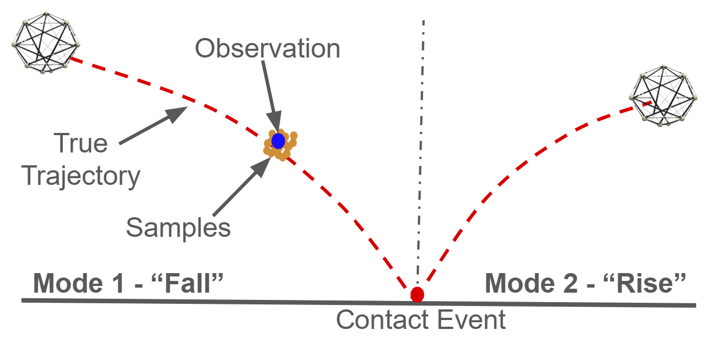

Path Integral Particle Filtering for Hybrid Systems via Saltation Matrices
08/2023 – 02/2026 · Research
Contributors
Sreeranj Jayadevan, Bo Yuan, Hongzhe Yu, Yongxin Chen
Overview/Motivation
This project specifically tackled the problem of state estimation in hybrid systems characterized by intermittent contact with their environments. This challenge is quite difficult due to uncertainty around discrete uncertainty propagation during contact events. To tackle this problem, we use a path integral filtering framework that exploits the duality between smoothing and optimal control, and couple it with saltation matrices to map out uncertainty propagation during contact.
Results/Contributions
- Tested on two hybrid contact systems (see images on the right)
- Showed improved state estimation over Monte Carlo simulations on both systems
Relevant Links
[paper]

Bouncing Ball

Spring Loaded Inverted Pendulum (SLIP)